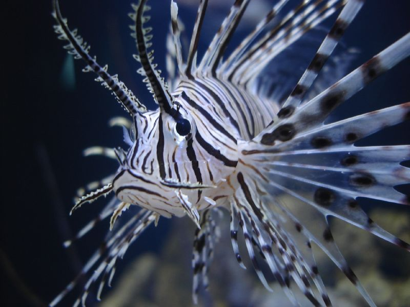

About the experiment
This experiment is to study the power of css to put the text into column like format.
Typically, this appears as if it is a newspaper or a magzine.This page itself is infact divided
into two sections, each carrying an article.
The -webkit-column-count tells exactly how many columns should be created for an article. Other
propertieslike -webkit coloumn-gap and -webkit-coloumn-rule can be used to to define the gap between
two columns and the line that needs to be drawn in between the coloumns.
Code snippet
{ -webkit-column-count: 3;
-webkit-column-gap: 20px;
-webkit-column-rule: 1px ridge black;
}
Implementation
It’s All in the Twirl

This is the same predicament that baby elephants go through, especially during the weaning period.
After relying entirely on their mother’s milk, young calves are suddenly introduced to new foods
like grass and shrubs. They must learn to use their trunk as a utensil for the first time.
I recently witnessed a calf struggling to learn how to graze using its trunk.
Every time it tried to grasp a bunch of grass, the pieces would dangle and fall.
After two unsuccessful attempts, the baby elephant approached its mother and touched her
trunk gingerly, a clear sign of communication. Suddenly, I saw the mother cutting grass with
her toe nails. She started collecting piles of already chopped of grass, while the young
elephant stood by patiently.
Soon after, the baby elephant began rolling the stack of grass with the help of his mother
and was finally able to eat.
Long live the king!

Pretty much everything about the venomous lionfish—its red-and-white zebra stripes,
long, showy pectoral fins, and generally cantankerous demeanor—says, "Don't touch!"
The venom of the lionfish, delivered via an array of up to 18 needle-like dorsal fins,
is purely defensive. It relies on camouflage and lightning-fast reflexes to capture prey,
mainly fish and shrimp. A sting from a lionfish is extremely painful to humans and can cause
nausea and breathing difficulties, but is rarely fatal.
Lionfish, also called turkey fish, dragon fish and scorpion fish, are native to the reefs
and rocky crevices of the Indo-Pacific, although they've found their way to warm ocean habitats
worldwide.
A lionfish will often spread its feathery pectoral fins and herd small fish into a confined
space where it can more easily swallow them.
The largest of lionfish can grow to about 15 inches (0.4 meters) in length.
Source Code
View Responsive CSS Source code